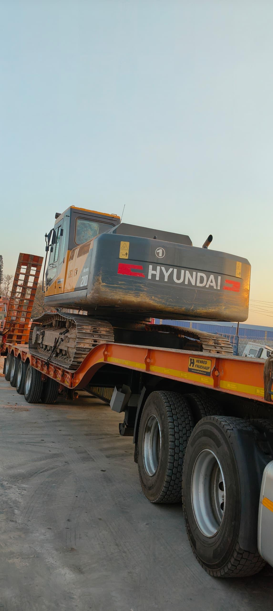

Tractors
Tractors for land preparation, agricultural work, towing and general site operations.
Hire dependable mining and construction equipment through one responsive supplier. Tell us what you need, where it is needed and for how long.
Request equipment availability →Available equipment
Availability depends on location, project duration and current scheduling. Contact us for a tailored quotation.
Tractors for land preparation, agricultural work, towing and general site operations.

Earth-moving machinery for site preparation, grading, material handling and related work.

Machinery for construction, mining, agricultural and material-handling requirements.

Tools and supporting equipment for mining and industrial operations.

Transport support for moving equipment, goods and materials between project locations.

Other earth-moving and material-handling requirements sourced against your specification.
How to enquire
Include the equipment type, quantity, work location, expected hire period and preferred start date. Our team will confirm availability and next steps.
Make an enquiry →